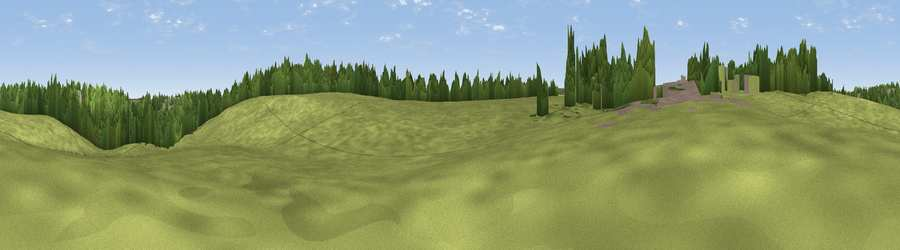

Thistle Hill
#46248 in England · top 100% of its area beats it · near CalcuttThe view, rendered

A 360° render of this exact spot computed from the terrain model, tree cover and land cover — summer colours, afternoon light, calibrated against photographs of famous viewpoints. Real trees, hedges and buildings will differ in detail.
The panorama
Grey silhouette: terrain skyline in each direction (720 bearings, Earth curvature and refraction included). Dashed green: skyline with trees (+15 m) and buildings (+8 m) as obstacles. Blue strip: how far the ground is visible on each bearing.
Where the view opens
Wedge length = distance to the farthest visible ground on that bearing (vegetation-aware). Rings at 10, 25 and 50 km.
What fills the view
75% grassland · 22% woodland · 2% built-up · 1% cropland
Angular shares of the visible panorama (visual magnitude), not map area. Landscape diversity 0.30 (0–1 Shannon).
Key numbers
More beautiful places nearby
The staircase of upgrades: each row has a higher view potential than everything closer. Driving times are estimates from straight-line distance, calibrated against real road routing — check an actual route before setting out.
| Place | Direction | Drive | Score |
|---|---|---|---|
| Simon Knoll | S · 1 km | ~2 min | 19.0 |
| Viewpoint near Knaresborough | NNW · 2 km | ~4 min | 24.5 |
| Howe Hill | NNW · 3 km | ~7 min | 30.6 |
| Gibbet Hill | N · 5 km | ~10 min | 57.0 |
| Viewpoint near Pannal | SW · 7 km | ~14 min | 57.1 |
| Sand Hill | NE · 7 km | ~14 min | 57.5 |
| Walton Head Whin | SW · 7 km | ~14 min | 60.5 |
| Viewpoint near Kirkby Overblow | SSW · 7 km | ~15 min | 63.5 |
53.99331, -1.46132 · source: osm peak · position refined by local search. Computed location — check access rights before visiting.